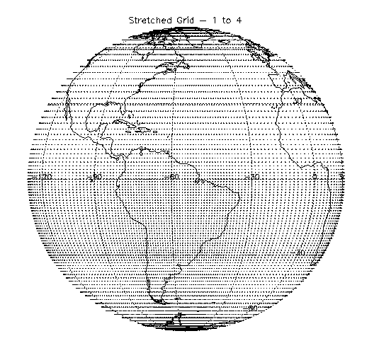

|
PC-07 Abstract Role of Land-Surface Processes and Regional and Global Interactions in the Seasonal to Interannual Variability of the Atmosphere in the Amazon Region
Tercio Ambrizzi — USP - Universidade de Sao Paulo (SA-PI) ABSTRACT In the Amazon region, interactions between atmospheric, land-surface, and oceanic processes with scales ranging from regional to global are important in determining the observed variability of the land-atmosphere-ocean system. This project focuses on understanding the roles of land-surface processes and the two-way interactions between regional and large-scale processes in the interannual and seasonal variability of the atmosphere in the Amazon region. Our approach will be to conduct experiments with a coupled land-atmosphere general circulation model (GCM) using prescribed sea surface temperatures. The most innovative aspect of this study will be the use of a state-of-the-art land-surface model (LSM) combined with a variable-resolution, stretched horizontal grid atmospheric GCM. The LSM (Koster and Suarez 1996) includes the controls exerted by vegetation on the surface energy and water budgets, as well as a representation of the sub-grid variability in land cover. The stretched-grid approach (Fox-Rabinovitz et al. 1997) allows the use of a fine horizontal resolution in the region of interest with increasingly coarser resolution elsewhere. Evaluation of the model’s predictions using observations (including LBA datasets such as rainfall, evaporation, and runoff, and rainfall from the TRMM satellite when available) and analyses (e.g. DAO and NCEP/NCAR reanalyses) will also be performed. BACKGROUND The variability of rainfall in the Amazon region has been shown to depend on regional (e.g., land-surface and topography) and global-scale (e.g., Atlantic and Pacific Ocean sea surface temperatures) factors. For instance, hydrological persistence may lead to changes in the variability of Amazon rainfall in intraseasonal to interannual scales. In fact, previous studies suggest that deforestation in the Amazon region may produce changes in soil moisture and evaporation that can lead to persistent drought. The water budget in the Amazon region is also affected by the Andes Mountains, which effectively block the inflow of moist air from the Eastern Pacific Ocean and divert the Atlantic trade winds, producing a low level northerly jet in central South America (e.g., Gandu and Geisler 1991). Mid-latitude fronts (Kousky 1979) and the South Atlantic Convergence Zone also affect the water budget in South America. Land-surface processes may also affect the seasonal migration of the monsoons over the Americas. Over the American continent the ITCZ convection follows the semiannual cycle of solar insolation, being anchored near 10N for about five months and near 10S for another five months, with fairly rapid migrations between hemispheres in May and October (e.g., Horel et al. 1989). The migration of the ITCZ between hemispheres is more abrupt than what would be produced by the seasonal cycle of solar insolation alone. Perhaps hydrological persistence delays the migration of the ITCZ between hemispheres with respect to the seasonal cycle of solar insolation. Atlantic and Pacific sea surface temperatures (SSTs) affect the rainy season in the Amazon region trough their influence on the strength and positions of the zonally (Walker) and meridionally (Hadley) oriented tropical circulations. For instance, during the 1983 El Niño episode, warm/cold SST anomalies in the tropical North/South Atlantic led to a northward displaced intertropical convergence zone in the Atlantic and a dry rainy season in the Amazon region (e.g., Marengo and Hastenrath 1993). OBJECTIVES In view of the discussion above, this project will address the following scientific questions: 1) What is the relative importance of Pacific and Atlantic SSTs and land-surface processes in determining seasonal to interannual rainfall variability in the Amazon region? 2) How is the rainfall in Amazonia controlled by the interactions between the land-surface and atmosphere? What is the water budget in Amazonia? Do land-surface processes cause the rapid onset and demise of the monsoons in South America? 3) What is the influence of Amazonia on global climate? In particular, how do land cover and land use changes in the Amazon region affect the local and global climates? 4) What is the influence of remote global-scale forcing on the seasonal to interannual variability of rainfall in the Amazon region? COUPLED LAND-ATMOSPHERE GCM The GCM used in this study includes a state-of-the-art land surface model and uses a stretched horizontal grid approach. The atmospheric component is the GEOS-climate GCM. SSTs will be prescribed. LAND SURFACE MODEL In the course of this study we will probably be using two land surface models: the Mosaic mode and the Catchment model. The Catchment model is under development at Goddard. It divides the world’s continental areas into small (4000 km^2) hydrological catchments and attempts to include the effects of sub-grid scale topographic variations in the hydrological calculations, particularly in the estimation of runoff. This model should be completed within a year and we hope to use it in this study as soon as it is ready. The Mosaic LSM (Koster and Suarez 1992, 1996 ) computes aerially-averaged energy and water fluxes from the land surface in response to meteorological forcing. The model allows explicit vegetation control over the computed surface energy and water balances, with environmental stresses (e.g., high temperatures, dry soil) acting to increase canopy resistance and thus decrease transpiration. The scheme includes a canopy interception reservoir and three soil reservoirs: a thin layer near the surface, a middle layer that encompasses the remainder of the root zone, and a lower ‘recharge’ layer for long term storage. Bare soil evaporation, transpiration, and interception loss occur in parallel, and runoff occurs both as overland flow during precipitation events and as groundwater drainage out of the recharge layer. A complete snow budget is included. The model was originally derived from the SiB model of Sellers et al. (1986) and still maintains certain SiB formulations, particularly those for canopy resistance. The LSM’s main innovation is its attempt to account for subgrid variability in surface characteristics through the ‘mosaic’ approach. A grid square area containing several different vegetation regimes is divided into relatively homogeneous sub-regions (‘tiles’ of the mosaic), each containing a single vegetation or bare soil type. Observed vegetation distributions are used to determine the partitioning. A separate energy balance is calculated for each tile, and each tile maintains its own prognostic soil moisture contents and temperatures. The Mosaic LSM is a full participant in PILPS, the GEWEX-sponsored land surface scheme intercomparison project In the PILPS exercises performed to date, the Mosaic LSM has proven quite effective in reproducing observed energy and water budgets. STRETCHED-GRID APPROACH In the stretched grid, a fine, fixed resolution is imposed in the region of interest with increasingly coarser resolution elsewhere. The main strength of this approach is that it allows the study of regional climate including the two-way interactions between the global-scale circulation and the smaller-scale, regional circulations over a limited domain. Although the GCM is a fully developed system that has been widely used in the scientific community, the use of the stretched horizontal grid has yet to be tested using the model’s full physical parameterizations and coupling it with the land surface model. Fox-Rabinovitz et al. (1997) have shown that, when used with a stretched horizontal grid, the GCM’s dynamical core provides an improved representation of the regional circulation for both medium and long-term simulations. Practically all work to date on regional climate modeling with multiscale grids has been done with nested models in which the large scale forces the regional scale with no feedbacks in the opposite direction. This is an adequate approach for problems in which the variability is essentially a large-scale phenomenon and the regional model is used as a diagnostic tool to describe regional details consistent with the prescribed global-scale circulation patterns. However, the use of this ‘diagnostic’ approach to study the seasonal to interannual variability in the Amazon region is questionable because regional hydrological processes may play at least as important a role as remote global-scale forcing in maintaining interannual fluctuations. Indeed, previous studies have identified both remote large-scale (e.g., Moura and Shukla 1981, Mechoso et al. 1990, Marengo and Hastenrath 1993) and local (typically continental and smaller scale) processes as essential ingredients in explaining South American precipitation regimes. REFERENCES 
|
|